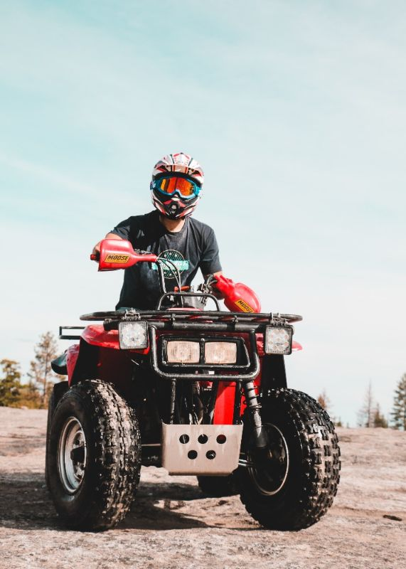
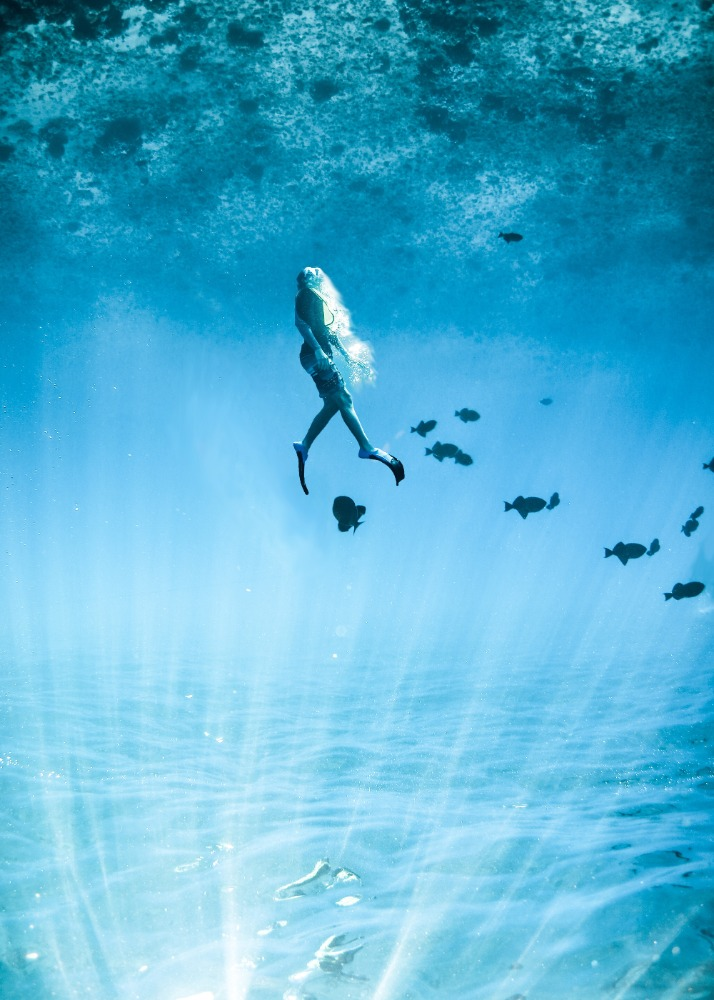
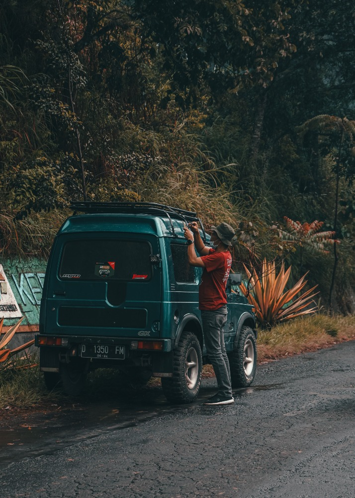
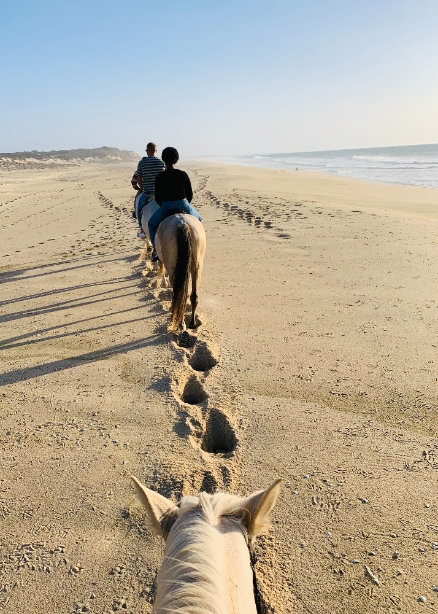

Tours
Creating unforgettable memories at the most iconic Cozumel locations




ATV Adventure to Jade Cavern
Let us take the lead in intruducing you to one of Cozumel's most prized locations: Jade Cavern.
Catamaran Sailing Tour to Passion Island
Take an exciting yet relaxing sailing trip with your sweethear out to Passion Island.
Cozumel Snorkeling Tour
It's a whole other world to explore under the ocean! Don't miss out on this incredible experience!
Private Jeep Excursion in Cozumel with Lunch
Explore the island like a local! Delicious local fare included.
Cozumel Beach Horesback Riding Tour
There's nothing quite like a lovely walk on the beach. Doing so on horseback just makes it that much more special.
Cozumel Food Tour
Attention, foodies! This is the tour for you. Get a taste of what Cozumel is all about!